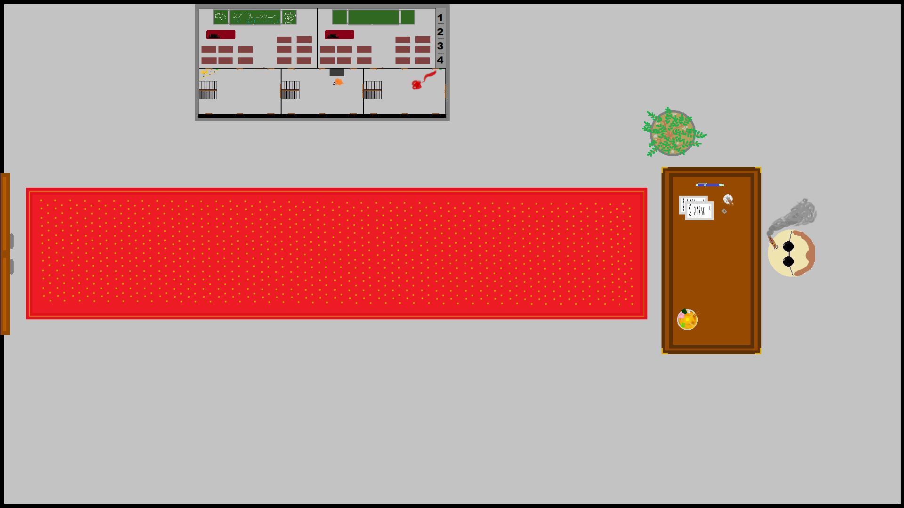

Students Strike je inovativní top down rouge like adventure hra se simulací davu.
V této hře očekávejte minihry, skvělé sprity, AI společníky a mnohem více!!
Cíl hry je jednoduchý! Naverbuj co nejvíce lidí aby jsi mohl získat maturitu ZADARMO!
Vytvořena skoupinou číslo 2, naších prváků (2022/23) ze střední školy SPŠ Trutnov.
Chození do leva - [←]
Chození do prava - [→]
Chození nahoru - [↑]
Chození dolů - [↓]
Interakce - [E]
Ukázky ze hry:
|------------------------------------------|
Tým 1:
Základ hry
Chození po chodbě
Followeři
|------------------------------------------|
Tým 2:
Ředitelna a odchod ze školy
|------------------------------------------|
Tým 3:
Encounters na chodbě
|------------------------------------------|
Minihry a jejich autoři:
|------------------------------------------|
Special thanks:
Pan učitel Šenkýř
Pan učitel Kotek
Lukáš Hajnyš